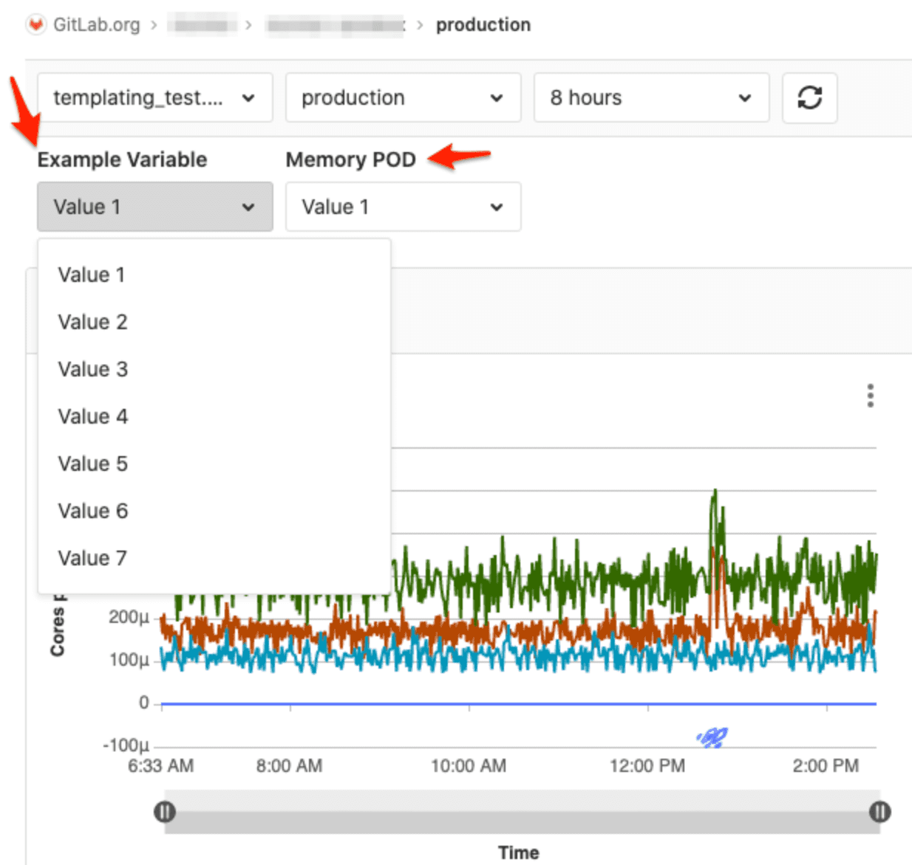

审核事件中的批准组更改
审核事件已经捕获了合并请求批准所做的更改。 在13.2中，我们通过向批准组添加有关更改的详细信息来完成循环。 进行更改以合并请求批准规则时，现在应该可以看到更完整的更改视图。
将实例级合并请求设置作用域标记到符合性的项目
以前，当管理员在“管理区域”中配置合并请求设置时，实例中的所有项目都会继承这些设置。 对于希望将不同，更灵活的要求应用于不受管制的项目的客户而言，这种继承模型过于广泛。 现在，我们使管理员能够指定 希望对其执行这些实例级设置 的 项目合规性框架标签 ，从而提供了更大的灵活性 。 选中后，只有带有相应合规性框架标签的项目才会继承这些设置，并且它们只能由管理员在实例级别进行编辑。
此功能使关注合规性的组织可以确保未经授权的用户无法编辑这种严格的职责分离控制，这将在合规性方面造成差距。 目前，此功能仅适用于自我管理的客户，但我们计划将此功能扩展到GitLab.com组所有者，作为维持职责分离的必要合规控制。
切换执行个人访问令牌（PAT）到期
现在，当 定义 了 生存期限制 并且个人访问令牌达到或超过 了 生存期限制 时，您可以切换PAT凭证过期的实施 。 这种可选的实施方式为组织提供了灵活的方式来管理组织的证书轮换。 此项更改是 更大解决方案的 一部分，该 解决方案 使GitLab中的凭据管理既对组织有效，又对开发人员友好。
从“问题列表”批量编辑Epic中的多个问题
通常有必要将多个问题分配给Epic，以共同组织工作。 现在，您可以一次批量编辑多个问题的史诗任务。 您可以从“问题列表”中执行此操作，从而减少了将工作正确分配给正确的史诗所需的选项卡和单击次数。
导入问题时将Jira用户映射到GitLab用户
将问题从Jira导入到GitLab时，您现在可以在运行导入之前将Jira用户映射到GitLab项目成员。 这使导入者可以针对要移至GitLab的问题设置正确的报告者和受让人。
REST API支持以重新排序问题
现在，您可以通过REST
API更改问题的相对顺序。 在此版本之前，无法以编程方式对问题进行重新排序。 对于试图支持自定义Board接口的API使用者而言，这尤其成问题，因为无法更改问题的相对位置。
感谢 @jjshoe 在我们的公共API中添加端点来支持此操作！
首先按最新活动查看Epic提要
从最早到最新的讨论和系统注释的默认顺序对于某些用例（例如理解给定史诗的历史）非常有用。 但是，当团队处于分类和消防模式时，它的帮助要小得多，因为他们必须一直滚动到史诗的末尾才能看到最新的更新。
现在，您可以颠倒默认顺序，并与活动Feed互动，顶部的是最新商品。 您对史诗的首选项将单独保存在本地存储中，并自动应用于您查看的每个史诗。
新存储库的可配置默认分支名称
创建新的Git存储库时，默认情况下，创建的第一个分支名为 master。 在与Git项目，更广泛的社区以及其他Git供应商的协调下，GitLab一直在听取开发社区的反馈，以确定默认分支的更具描述性和包容性的名称，并为用户提供更改默认分支名称的选项。他们的仓库。
GitLab现在允许实例管理员为通过GitLab界面创建的新存储库配置默认分支名称。
跟踪您在设计中的活动
重要的是，您必须在GitLab中进行设计工作而获得荣誉！ 我们已经添加了活动，可以在您的用户个人资料，组页面和项目页面上上传，修订和评论Designs！ 一目了然地跟踪您的设计操作。
GitLab Core中的可选合并请求批准
代码审查是每个成功项目的基本实践，一旦合并请求状态良好就给予批准是审查过程的重要组成部分，因为它清楚地传达了合并变更的能力。 对于Core用户，通常可以通过发表评论或竖起大拇指来完成，但是这些批准形式很容易丢失。
在13.2中，具有项目开发者权限的任何人都可以在GitLab
Core中批准合并请求。 这使审阅者很容易知道如何给予批准，并使维护人员更容易知道何时准备合并更改。 批准在GitLab
Core和GitLab.com Free中是可选的，但是GitLab Starter和GitLab.com
Silver及更高级别的用户也可能
需要批准
才能将代码合并到代码库中。
将Wiki重定向到Confluence工作区
如果您与Confluence进行团队合作，那么很难同时跟踪您的Confluence工作区和使用它的GitLab项目。 在13.2中，我们添加了Confluence集成，该集成将项目的左侧边栏直接链接到新标签中的Confluence工作区。
Wiki页面差异
Git用户经常严重依赖文件差异来观察，查看和跟踪内容更改。 在GitLab
13.2中，我们增加了对在Wiki页面上查看差异的支持。 您可以通过Wiki提交历史记录无缝查看两个版本之间的逐行内容更改。
感谢 Steve Mokris 和 Greg 的贡献！
覆盖徽章的自定义文本
使用多个coverage徽章，但每个徽章计算不同值的项目只能 coverage用作每个徽章的文本。 这使得弄清楚该值的含义很麻烦。
现在，作为项目维护者或所有者，您可以自定义coverage徽章的文本，以更好地区分项目上显示的多个coverage徽章。
感谢 Fabian Schneider 的贡献！
gitlab app Runner 13.2
我们今天还将发布GitLab Runner
13.2！ GitLab
Runner是一种轻量级，高度可扩展的代理，可运行您的构建作业并将结果发送回GitLab实例。 GitLab Runner与GitLab CI
/ CD协同工作，GitLab CI / CD是GitLab附带的开源持续集成服务。
什么是新的： Bug修复： 所有更改的列表都在GitLab Runner
CHANGELOG中 。
查看和管理小组跑步者
现在，您可以利用新的组管理用户界面（UI）来管理组织的运行者。 在此新用户界面中，您可以在GitLab中查看，编辑，暂停和停止与您的组关联的任何Runner。 这样可以更轻松地一次解决多个项目的Runners潜在问题。
验证标签清理策略正则表达式
您可以通过创建每个项目的标记清除策略来定期从Container
Registry中删除较旧的标记。 这些策略基于用户创建的正则表达式。 不幸的是 container_repository:cleanup_container_repository，与这些表达式相对应 的 工作遇到了25％的错误率。 该 Gitlab::UntrustedRegexp作业认为该正则表达式无效，并且当策略运行失败时，不会通知任何人。
我们已迈出了解决这一问题的第一步。 GitLab现在使用 re2 库 验证正则表达式 ，因此您无法保存无效的模式。 我们还向 文档 添加了 一些常见的正则表达式模式 。 您可以根据 史诗中 的路线图找到更多详细信息以及我们计划为该功能添加将来的增强功能的计划 。
注释.gitlab-ci.yml中的非部署作业
从历史上看，该 environment:action关键字不能准确地表示未导致部署的环境作业，例如批准中的作业和为将来的部署构建映像。 在GitLab 13.2中，作业现在包含一个 prepare关键字，以使非部署环境作业的状态更加清晰，使其保持准确并代表您的部署活动。
目前，没有维护者访问权限的GitLab用户无法与Terraform命令（包括）交互 terraform
plan，该 命令 会创建对开发工作流程有用的执行计划。 在GitLab
13.2中，具有开发者角色的用户获得对Terraform状态API的只读访问权限，从而使更多用户可以做出贡献而不会冒着使用不当的风险。
警报详细信息页面显示系统注释
当您更改警报的状态，将其分配给团队成员或通过警报创建问题时，GitLab会跟踪这些事件并将它们显示为警报详细信息页面上的注释。 注释为响应者提供了有用的上下文，使您的团队可以在对警报进行分类时更好地进行协作，并防止不必要的重复工作。
指标仪表板中面板的键盘快捷键
现在，您可以在GitLab
13.2中使用键盘快捷键与指标仪表板进行交互。 使用键盘快捷键，您可以在对事件进行分类的同时快速浏览仪表板，从而加快响应流程。
在警报列表中搜索纯文本
警报通常很嘈杂。 为了帮助您找到需要分类的相关警报，并优化显示警报的列表，现在可以在“警报”列表中进行纯文本搜索。
触发测试以进行警报集成
配置警报系统以将警报路由到GitLab
REST端点后，您现在可以触发测试警报以确保正确配置了系统，从而使您更加放心。
用于高级全局搜索的Amazon ECS角色身份验证
以前，在AWS上连接到Amazon
Elasticsearch Service以启用Advanced Global
Search时，您只能通过使用静态证书或EC2 IAM角色 Aws::InstanceProfileCredentials。 现在，作为附加的身份验证选项，您可以将 IAM角色用于Amazon ECS任务 。
感谢 Jason Barbier
@kusuriya 对社区的贡献！
系统管理员可以使用管理员界面为各个节点调整地理设置。 到目前为止，这些表单包含一些过时的用户界面元素，显示了太多可选信息，并且某些输入未得到正确验证。
在GitLab 13.2中， 单独的地理节点设置 和
常规地理设置会 验证用户输入，并分为不同的部分（例如，“性能和资源管理”），以使系统管理员更容易找到相关设置。
Geo支持复制GitLab软件包注册表
Geo现在支持将 Package Registries 复制 到辅助节点，从而允许分布式团队从最近的Geo节点访问它们，从而减少了延迟并改善了整体用户体验。 此外，在故障转移到辅助节点时，还可以从辅助节点还原Package
Registry资产。
我们目前 不支持
对这些资产的 验证 ，但是我们计划在将来提供支持。
Patroni可作为repmgr的实验替代品
对于自我管理的GitLab安装，Patroni现在可以作为备用PostgreSQL复制和故障转移解决方案。 Patroni取代了repmgr，带来了很多改进。 使用Patroni，发生故障的主节点在恢复联机后会自动作为备用节点添加回群集。 Patroni的添加也使我们无法添加对PostgreSQL
12的支持，也无法在Geo辅助站点上支持PostgreSQL复制和故障转移。 Patroni与Geo的结合使用目前正在测试中，尚不支持。 此开关支持GitLab的目标，即为我们的解决方案提供狗粮。 自2018年以来， Gitlab.com一直使用Patroni来 管理故障转移 ，使其成为经过良好测试的解决方案。 Repmgr将在Omnibus
GitLab中继续可用，直到GitLab 14.0。 有关目前正在实验中的设置Patroni的说明，请参阅GitLab的 Patroni文档 。
选择延迟项目删除
在GitLab
13.2中，我们改进了项目删除体验，使其在所有定价层均保持一致，并引入了组级别的切换功能，使您可以在永久删除之前启用删除延迟时间。 以前，删除项目的默认行为在各个层之间是不同的。 项目将立即在“免费/核心”层和“青铜/入门层”中删除，并在“银/高级”和“金/终极”层中延迟7天。
现在，这种行为在所有方面都是一致的，删除项目将导致该项目立即被删除。 为了确保您在此工作流程中仍然具有灵活性，我们为防止数据丢失是关键要求的组和项目引入了组级别的切换到“启用延迟的项目删除”。 删除项目应该很容易，并且对于那些在保护知识产权方面有更严格要求的组织，要有适当的保护措施。
显示凭据清单中已过期或已撤销的SSH密钥和PAT
管理用户凭据是任何合规性计划的重要组成部分，并且要求负责确保遵循策略的合规性专业人员具有可见性。 凭据清单现在突出显示已过期的所有SSH密钥或个人访问令牌（PAT）。 此外，还将突出显示已撤销的PAT，以便为合规专业人员提供必要的洞察力，以进行用户凭据审查。
这项更改是一项 更大计划的 一部分，该 计划 旨在使GitLab中的凭据管理更加简单，友好和灵活，以使客户能够实施对用户和组织最有意义的流程。
从问题列表中批量编辑问题健康状况
在管理和计划多个问题时，分别更新每个问题的健康状况可能很麻烦。 现在，您可以从“问题列表”中一次编辑许多问题的运行状况。
折叠路线图上的里程碑
在共享，审阅或展示路线图时，通常需要最小化某些部分或调整为合适的受众显示的信息。 现在，GitLab允许您最小化路线图的里程碑部分，以显示更多史诗或隐藏不必要的信息。
新的史诗创作页面
通过我们新的史诗创建页面，只需一步即可创建史诗并填写您的描述，添加标签并设置开始/到期日期。
服务台移至核心
在9.1版本中，我们将 Service Desk 添加 到了Premium层，使团队可以通过电子邮件直接与外部用户联系。
通过听取客户的声音，我们了解到Service
Desk对于任何规模的团队都是一项有用的功能。 现在，在GitLab
13.2中，无论您的GitLab层如何，都可以启用Service Desk。
批量建议
建议
合并请求中的 更改 使提出建议的建议变得容易，但是，如果您收到很多建议，则一一应用这些建议会很慢。
使用“批量建议”，您可以一次应用多个建议，更快，更轻松！ 保持合并请求中的提交历史记录整洁也是有益的。 感谢 Jesse Hall 的
贡献 ！
Gitaly Cluster TLS支持
Gitaly Cluster现在支持 传输层安全性（TLS） ，这意味着当同时为Gitaly和Praefect组件启用TLS时，Gitaly及其客户端GitLab和Praefect之间的所有通信都将被加密。 将GitLab部署到具有其他不受信任的内部服务的网络时，这将很有帮助。
以前，GitLab和Gitaly之间的通信支持TLS加密，但是使用Praefect（Gitaly
Cluster的一个组件）时不支持加密。
使查找设计更容易
由于设计是产品开发过程的重要组成部分，因此重要的是，您必须轻松找到已创建并添加到问题中的设计。 在13.2之前，我们具有“ 设计” 选项卡，但是已经将设计上移，因此它们现在位于问题描述的下方。
这将鼓励更多的协作，并确保每个人都能在问题描述的下方看到设计。
Web IDE中.gitlab-ci.yml的实时反馈
GitLab
CI是快速且高度可配置的，但是可能很难记住所有 配置参数 ，并且错误的错字可能会使您的 .gitlab-ci.yml文件无效。 为了更轻松地配置您的GitLab
CI管道，Web IDE现在在编辑 .gitlab-ci.yml文件 时提供了实时更新和完成 功能。
Web
IDE内联提供了提示和完成反馈以及工具提示，以帮助您了解为什么会看到错误。 目前，该反馈是基于社区贡献的 模式 从 Schemastore ，但我们将继续评估 内置 GitLab的模式作为部分。
Gitaly Cluster（测试版）的事务性写入
Gitaly
Cluster允许在多个热Gitaly节点上复制Git存储库。 通过消除单点故障来提高容错能力。 但是，由于写操作当前是异步复制的，因此GitLab服务器最初仅具有一个更改副本。
在GitLab 13.2中，可以为Gitaly
Cluster启用对Git存储库的事务写操作。 启用此选项并将更新推送到GitLab时，写操作将被代理到副本Gitaly节点。 将使用两阶段提交协议在Gitaly节点之间协调写操作，以便它们就存储库的新状态达成共识。 当前，写事务仅限于通过HTTP和SSH
Git接口推送的操作，并且不包括通过GitLab接口（如Web IDE）进行的写操作。
在9.3版本中，GitLab 在我们的Starter / Bronze层中 添加了 代码质量扫描 ，使您可以直接在合并请求中查看代码质量的变化。 从那时起，我们的用户就提供了反馈意见，认为该数据对于任何规模的团队（包括个人贡献者）都是有价值的。 在13.2中，无论您的GitLab层如何，您都可以在合并请求中查看代码质量报告。
排除CI工件路径中的文件
使用新 exclude语法，可以防止将特定文件添加到工件。 这样就无需显式引用应添加到工件的每个文件夹的路径（以避免包含过多文件夹）。 通过支持通配符（全局和双星全局），可以轻松排除整个子目录。
系统从合并列车中删除MR时发出通知
如果您将合并请求添加到“合并训练”中，但由于问题而系统将其删除，您现在会收到“待办事项”任务形式的通知。 这意味着您可以放心地将MR添加到“合并火车”中，知道合并将自动发生，或者您将收到失败通知。 如果合并不成功，则可以快速纠正错误并重新提交MR，而以后再也不会惊讶于它从未被合并就不会感到惊讶。
触发作业与下游管道的视觉关联
如果您查看了一个复杂的管道图，希望有一个简单的方法来知道哪个作业触发了特定的下游管道，那么就不再希望了。 现在，您只需将鼠标悬停在下游管道上，即可看到一个工具提示，该工具提示为触发该管道的作业命名。 无需浏览所有作业名称即可找到“一个”，因为悬停操作还会在上游管道中突出显示触发作业。
JavaScript和TypeScript SAST分析器可用于所有
我们希望帮助开发人员编写更好的代码，而不必担心常见的安全错误。 静态应用程序安全测试（SAST） 通过允许开发人员在编写代码时轻松识别常见的安全问题并主动缓解，从而帮助防止了安全漏洞。 作为我们 社区管理承诺的 一部分， 我们将 在每个 GitLab层中 使用 我们的JavaScript和TypeScript
SAST分析器 （ESLint） 。 这将允许 所有 使用JavaScript或TypeScript开发的GitLab用户都可以利用 SAST安全扫描 为他们的项目。 作为此举的一部分，我们已弃用了现有的TSLint分析器，因为ESLint现在具有其功能。 您可以在我们的 弃用通知中 了解更多信息 。 我们将继续将其他开源（OSS）SAST分析仪移至Core。 您可以遵循我们的 SAST到Core史诗 ，了解何时可以使用其他分析仪，甚至可以为这项工作做出贡献。
在单个Terraform管道中，可能会影响多个基础结构环境。 以前，GitLab仅对单个环境启用了合并请求中预期更改的快速概述。 从GitLab
13.2开始，Terraform Merge Request小部件支持多个Terraform工件文件。
我们正在积极寻求有关Terraform功能的反馈。 如果您有改进“合并请求”小部件的想法，请 在“合并请求”小部件epic中 与我们分享 。
从GitLab用户界面访问Opsgenie
Opsgenie是用于操作任务（包括警报和事件管理）的流行IT服务管理工具。 在GitLab
13.2中，您可以直接在GitLab中启动Opsgenie工作流程。 是否想给我们有关这种集成的反馈？ 对此问题 做出贡献， 并告诉我们如何使它变得更好！
自动分组相同的警报以减少噪音
维护IT服务的团队每天会收到数百或数千个警报。 现在，GitLab将重复数据删除并组织进来的警报，为您提供警报计数，同时使警报列表可管理和有用。 您的警报与从警报创建的事件相关联，可帮助您跟踪已解决的警报以及仍需要分类的警报。
要使用手动配置的（外部）Prometheus服务器，从GitLab验证用户身份可能会遇到问题。 现在，在Gitlab
13.2中，您可以使用OAuth，以确保身份验证安全且易于管理。
使用PromQL设置指标仪表板变量
现在，您可以使用PromQL在指标仪表板中设置变量。 您的PromQL查询可以返回值列表，以用作 指标仪表板中的 动态变量 。

指标仪表板的虚荣网址
GitLab
13.2引入了虚荣性指标仪表板URL，以帮助您在不同的仪表板和项目之间快速导航。
GitLab
Geo使分布式团队可以更有效地工作，创建并维护GitLab的本地副本以减少延迟，因此他们不必等待文件长距离下载。 在这次对Geo的更新中，我们正在改进数据库管理变更的方式。 为了确定需要从主数据库复制什么，Geo将跟踪数据库与只读辅助数据库进行比较。 如果Geo的数据库查询超时，则无法成功复制数据。 在GitLab 13.2中，我们使用了一种 新方法来同步Projects ，从而消除了数据库语句超时的可能性。 我们还改进了从所有数据源的辅助节点删除数据的方式，从而提高了GitLab
Geo的总体可扩展性和性能。
这些迭代使我们更接近消除Geo对 Foreign Data Wrappers 的依赖 ，后者是为提高性能而添加的，但是这使得Geo更加复杂且难以维护。
Geo支持在Geo辅助数据库上暂停数据库复制
Geo将数据从一个主要Geo节点复制到一个或几个Geo辅助节点。 尽管Geo支持通过管理员界面暂停对存储库和文件的复制，但无法暂停数据库复制。 在13.2中，Geo支持 在辅助Geo节点上 使用new gitlab-ctl
geo:pause和 gitlab-ctl
geo:resume命令 暂停和恢复所有复制数据的复制，包括PostgreSQL数据库 。
这使系统管理员可以在辅助地理节点上暂停所有复制，同时在主要地理节点上执行关键维护操作。 如果主节点发生故障，则不会将任何更改复制到已暂停的辅助节点，然后可以将其用于故障转移。
Geo的故障转移preflight-checks命令检查复制状态
使用GitLab
Geo执行故障转移时，系统管理员应 使用 命令 执行许多 预检检查 gitlab-ctl
promotion-preflight-checks。
在GitLab 13.2中，该 gitlab-ctl
promotion-preflight-checks命令现在 自动检查复制状态 并通知您结果，从而删除了以前手动执行的步骤。 该 gitlab-ctl
promote-to-primary-node命令还支持 强制模式 ，这意味着即使某些预检检查失败，故障切换仍将继续。
这是 向更简单的故障转移过程 的迭代 ，我们计划在 将来的迭代中 进一步自动执行预检检查 。
综合总线的改进
压缩NGINX响应的最小大小已从10,240字节降低到250字节。 这样可以减少需要多个数据包的请求数量，并减少加载网页所需的时间。 有关详细信息，请参见 合并请求 。 配置对象存储的设置已合并，因此可以在中的同一部分中配置所有对象的对象存储 gitlab.rb。 这是一项巨大的改进，使对象存储配置更加高效，包括能够将单个凭据用于多个S3存储桶中的对象存储。 它还使GitLab
Workhorse可以直接通过其自己的S3客户端上传文件，而无需使用预先签名的URL。 有关更多详细信息，请参阅 对象存储文档 。 Omnibus安装软件包 现已可 用于Ubuntu 20.04。 Omnibus安装软件包 现在可 用于SLES 12.5。 GitLab中打包的Chef版本已更新为Chef
15。 GitLab 13.2包含 Mattermost 5.24 ，这是 开源的Slack-alternative 。 此版本包括改进的最终用户搜索，改进的会话体验等等。 它还包括 安全更新 ，建议从早期版本升级。 升级到Mattermost
5.24时，请参阅 有关启用新 ExtendSessionLengthWithActivity设置 的重要升级说明 。 如果您的Mattermost环境包含许多表情符号反应，请同时参阅升级说明，以了解更长的升级时间。
零停机时间为高级全局搜索重新编制索引
在先前版本的Advanced Global
Search中，如果需要重新编制索引，则必须计划Advanced Global Search关闭。 删除索引并创建新索引时，搜索结果不可用。 在13.2中，我们添加了索引别名，您可以通过在管理员设置中按一下按钮来重新索引，而不会造成任何停机。 展望未来，可以在不中断任何用户工作流程的情况下为Advanced
Global Search重新编制索引！ 这很重要，因为在较大的实例上，重新索引可能需要一些时间才能完成。
在每个版本中，我们将继续在改善GitLab性能方面取得重大进展。 我们致力于提高每个GitLab实例的速度。 其中包括拥有超过100万用户的实例GitLab.com！
在GitLab
13.2中，我们将在问题，项目，里程碑等方面提高性能！ GitLab 13.2中的一些性能改进包括：